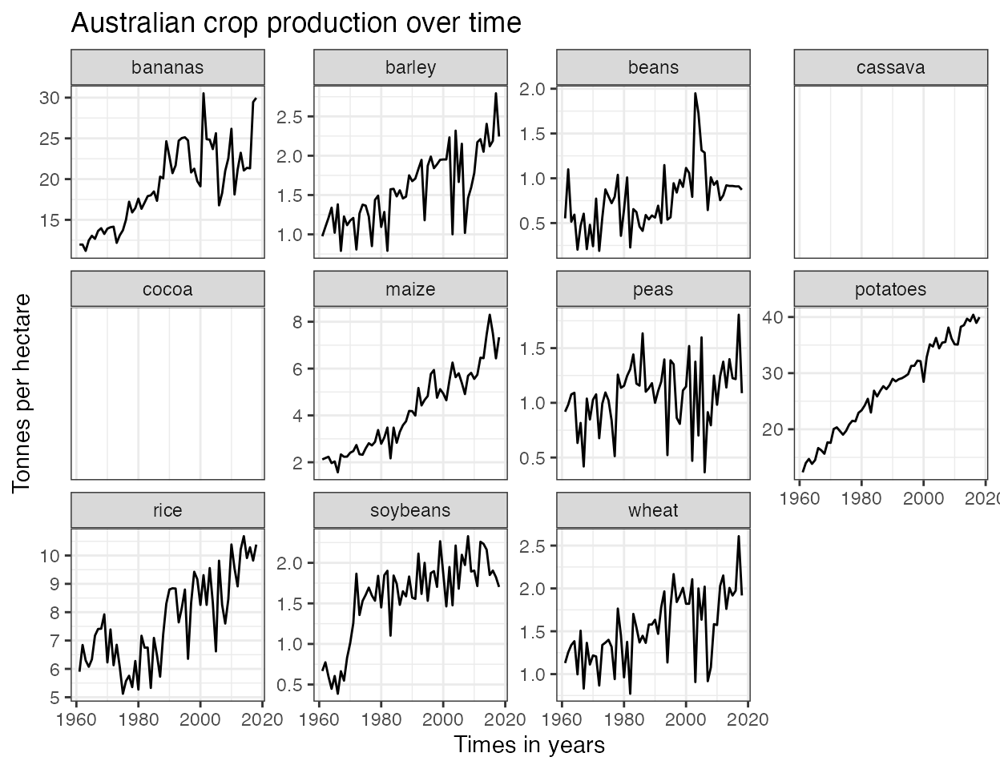

This package provides the key_crop_yields dataset,which contains crop yields for countries over time.The yields are measured in tonnes per hectare for 11 crops(wheat, rice, maize, soybeans, potatoes, beans, peas, cassava, barley, cocoa and bananas).This data is sourced from Our World in Data and Tidy Tuesday.
It can be assessed via:
library(cwdata) library(tibble) ## show just first 10 rows not all rows key_crop_yields #> # A tibble: 143,825 x 5 #> country code year crop tonnes_per_hectare #> <chr> <chr> <dbl> <chr> <dbl> #> 1 Afghanistan AFG 1961 wheat 1.02 #> 2 Afghanistan AFG 1961 rice 1.52 #> 3 Afghanistan AFG 1961 maize 1.4 #> 4 Afghanistan AFG 1961 soybeans NA #> 5 Afghanistan AFG 1961 potatoes 8.67 #> 6 Afghanistan AFG 1961 beans NA #> 7 Afghanistan AFG 1961 peas NA #> 8 Afghanistan AFG 1961 cassava NA #> 9 Afghanistan AFG 1961 barley 1.08 #> 10 Afghanistan AFG 1961 cocoa NA #> # … with 143,815 more rows
Crop production in Australia:
library(ggplot2) library(dplyr) #> #> Attaching package: 'dplyr' #> The following objects are masked from 'package:stats': #> #> filter, lag #> The following objects are masked from 'package:base': #> #> intersect, setdiff, setequal, union key_crop_yields%>% filter(country=="Australia")%>% ggplot(aes(x=year,y=tonnes_per_hectare))+ geom_line()+ facet_wrap(vars(crop),scales="free_y")+ labs(y="Tonnes per hectare", x="Times in years", title="Australian crop production over time")+ theme_bw()
